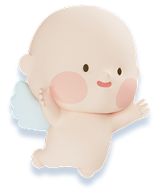

여름방학은 아이들의 야외 활동이 1년 중 가장 많아지는 시기입니다. 물놀이장·워터파크·계곡·캠핑장·자전거·킥보드까지, 사고에 노출되는 상황이 집중되죠. 실제로 어린이 안전사고는 계절적으로 여름철에 크게 늘어나는 경향이 있고, 물놀이 관련 사고는 7~8월에 집중됩니다.
그런데 많은 부모가 사고가 난 뒤에야 "이게 보험이 되나?"를 찾아봅니다. 문제는, 대부분의 보험은 사고 이력이 생기면 관련 담보를 뒤늦게 추가하기가 어렵다는 점입니다. 즉 보장 점검은 여름이 시작되기 전에 끝내야 의미가 있습니다.
핵심. 골절·화상·상해 특약은 사고가 난 뒤에 소급 가입할 수 없습니다. "지금 우리 아이 보험에 여름 사고를 받쳐 줄 담보가 있는지"를 성수기 전에 확인하는 것이 무엇보다 중요합니다!
여름 사고는 대부분 '상해(재해)'로 분류됩니다
물놀이 중 미끄러지거나, 자전거에서 넘어지거나, 뜨거운 것에 데는 사고는 보험 약관상 질병이 아닌 '상해(재해)'로 처리됩니다. 그래서 여름 사고 대비의 핵심은 상해 관련 담보 — 상해수술비, 골절진단비, 깁스치료비, 화상진단비, 응급실내원비, 그리고 통원·입원 실손입니다.
2. 여름방학 아이 사고 유형 5가지 — 어떤 보장으로 받나
베이비빌리 베동 커뮤니티에 올라온 여름철(6~8월) 청구 후기에서 반복적으로 등장한 사고 유형 5가지를, 각각 어떤 담보에서 지급되는지와 함께 정리했습니다.
유형 1
물놀이·워터파크·계곡 낙상
미끄러운 바닥에서 넘어져 골절·타박·열상 — 여름 청구 1순위
대표 부상
손목·발목 골절, 깁스, 열상 봉합
청구 빈도
매우 높음
어디서 나오나. 골절진단비, 깁스치료비, 상해수술비(봉합·정복), 통원·입원 실손, 응급실내원비. 여러 담보가 한 사고에 동시에 지급될 수 있습니다.
유형 2
자전거·킥보드·인라인 사고
여름방학 야외 이동 중 넘어짐 — 골절·치아 손상 잦음
대표 부상
팔·쇄골 골절, 영구치 파절, 찰과상
청구 빈도
높음
어디서 나오나. 골절진단비, 상해수술비, 치아파절 진단비(가입 시), 통원 실손. 남의 자전거·물건을 파손하거나 타인을 다치게 하면 자녀배상책임도 함께 검토합니다.
유형 3
화상 — 바비큐·불꽃놀이·뜨거운 음식
여름 캠핑·물놀이 뒤 야외 취사 환경에서 자주 발생
대표 부상
2도 이상 화상, 흉터 치료
청구 빈도
높음(영유아)
어디서 나오나. 화상진단비(2도 이상 정액), 상해수술비(피부이식 등), 통원·입원 실손. 화상 특약은 월 보험료가 작지만 회복기 치료비 부담을 크게 줄여 줍니다.
유형 4
여름철 소아 질환 — 수족구·장염·수두
사고는 아니지만 여름에 입원·통원이 몰리는 '질병' 축
대표 상황
수족구·바이러스성 장염·식중독 입원
청구 빈도
매우 높음
어디서 나오나. 통원·입원 실손(자기부담 제외), 입원일당(1일당 정액). 상해가 아닌 '질병' 담보에서 처리되므로 실손 유지 여부가 관건입니다.
유형 5
벌레·진드기 물림, 온열질환
캠핑·야외 활동에서 감염·알레르기·탈진으로 진료
대표 상황
벌레물림 감염, 알레르기, 온열탈진 응급실
청구 빈도
중간
어디서 나오나. 통원 실손, 심하면 입원 실손·입원일당·응급실내원비. 단순 연고 처방 등 소액은 자기부담금 때문에 실지급액이 적을 수 있습니다.
포인트. 유형 1~3·5의 사고성 부상은 상해 담보가, 유형 4의 질환은 실손·입원일당이 받쳐 줍니다. 두 축이 모두 있어야 여름 사고 전반을 커버할 수 있습니다.
3. 사고 → 보장 매핑 한눈에 보기
여름철 대표 사고별로 어떤 담보가 작동하는지 표로 정리했습니다. 실제 지급 여부·금액은 가입한 담보 구성과 약관에 따라 달라집니다.
사고 상황
1차 담보
함께 청구 가능
성격
물놀이 낙상 골절
골절진단비 + 깁스치료비
상해수술비 · 통원/입원 실손 · 응급실내원비
상해
자전거·킥보드 사고
골절진단비 · 상해수술비
치아파절 진단비 · 통원 실손 · 자녀배상책임(타인 피해 시)
상해
바비큐·불꽃 화상
화상진단비
상해수술비 · 통원/입원 실손
상해
수족구·장염 입원
입원 실손
입원일당
질병
벌레물림·온열질환
통원 실손
입원 실손 · 응급실내원비
질병/상해
남을 다치게 함·물건 파손
자녀배상책임
—
배상
읽는 법. 한 번의 사고에서 여러 담보가 동시에 지급되는 경우가 많습니다. 예를 들어 물놀이 골절은 '골절진단비 + 깁스치료비 + 실손 + 응급실내원비'가 함께 나올 수 있으니, 청구 시 해당 담보를 빠뜨리지 마세요.
4. 남의 아이를 다치게 했을 때 — 자녀배상책임
여름 물놀이장이나 캠핑장처럼 아이들이 몰리는 공간에서는, 우리 아이가 남을 다치게 하거나 물건을 파손하는 상황도 생깁니다. 이때 작동하는 것이 자녀배상책임(일상생활배상책임, 일배책) 담보입니다.
보장 대상 — 아이가 타인에게 입힌 부상 치료비, 타인 물건 파손 손해
중복 주의 — 이 담보는 가족 중 한 명(부모)의 보험에만 있어도 자녀가 보장되는 경우가 많습니다. 부모·자녀 여러 명이 각각 가입해도 비례보상으로 한 번만 지급되니, 중복 가입은 보험료 낭비입니다.
필요 자료 — 사고 발생 시 상대방 인적사항, 사고 경위, 상대 치료비 영수증을 반드시 확보해 두세요.
확인 팁. 우리 집 보험 어딘가에 일상생활배상책임이 이미 있는지부터 확인하세요. 자세한 구조는 자녀배상책임 특약 완전정리에서 다룹니다.
5. 여름휴가 여행자보험, 어린이보험과 뭐가 다른가
여름휴가 여행을 앞두고 "아이 여행자보험을 따로 들어야 하나?"를 많이 물으십니다. 국내와 해외를 나눠 보면 판단이 쉬워집니다.
구분
국내 여행
해외 여행
기존 어린이보험
상해·실손이 대부분 그대로 적용
국내 실손은 해외 진료비 보장 안 되는 경우 많음
추가 필요성
낮음 (중복 우려)
높음 (해외 의료비 공백)
여행자보험 핵심 담보
—
해외 의료비 · 휴대품 손해 · 배상책임 · 항공지연
가입 방식
대개 불필요
여행 기간 단기 가입
정리. 국내여행은 기존 어린이보험으로 충분한 경우가 많고, 해외여행은 해외 의료비 공백이 핵심이라 단기 여행자보험을 검토하는 것이 안전합니다. 이미 가진 보장을 먼저 확인하고 부족분만 채우세요.
☀️ 우리 아이 보험에 여름 사고 담보가 들어 있는지 헷갈린다면?
베이비빌리 무료 보장 점검 — 상해·실손·자녀배상책임 공백을 5개 보험사 기준으로 한 번에 확인
해당 담보 모두 체크. 3번 매핑 표를 보고 한 사고에서 함께 청구 가능한 담보(골절+깁스+실손+응급실 등)를 빠뜨리지 마세요.
4
배상 사고면 상대 자료 확보. 자녀배상책임 청구는 상대방 인적사항·사고 경위서·상대 치료비 영수증이 추가로 필요합니다.
5
앱·모바일 간편청구. 소액 통원은 보험사 앱으로 사진 첨부해 청구하면 빠릅니다. 청구 방법은 가입 보험사별로 다르니 먼저 확인하세요.
주의. 청구권 소멸시효는 통상 사고일로부터 3년입니다. 소액이라도 미루지 말고, 여러 담보가 걸린 사고는 특히 놓치는 담보가 없도록 확인하세요.
7. 베동 커뮤니티 여름 사고 실제 후기
베이비빌리 동네(베동) 커뮤니티에 올라온 여름철 청구 후기 중, 보장 구성이 결과를 갈랐던 사례를 정리했습니다.
지호맘 (만 6세 남아)
베동 #여름육아 · 2025.08
워터파크 유수풀에서 미끄러져 손목 골절 + 깁스 4주 했어요. 골절진단비 50만, 깁스치료비 20만, 응급실내원비 15만에 통원 실손까지 합쳐 90만원 넘게 받았어요. 골절 특약 월 1,400원짜리였는데 이거 하나로 다 커버됐네요.
▶ 청구 보험금 합계 약 90만원 / 관련 특약 연 보험료 2만원 미만

유나아빠 (만 4세 여아)
베동 #캠핑 · 2025.07
캠핑장에서 바비큐 불판에 손등을 데어서 2도 화상이었어요. 화상진단비 50만이랑 통원 실손으로 치료비 거의 다 나왔고, 흉터 안 남게 치료받는 동안 부담이 확 줄었어요. 화상 특약 있는지도 몰랐는데 설계 때 넣어둔 게 다행이었어요.
▶ 청구 보험금 합계 약 60만원 / 화상 특약 월 보험료 1천원대
서준맘 (만 5세 남아)
베동 #여름건강 · 2025.08
여름에 수족구로 3일 입원했는데 실손이랑 입원일당(7만×3일)까지 해서 입원비랑 간병 휴가 손해를 거의 메웠어요. 사고만 대비하는 줄 알았는데 여름 질병도 실손이 이렇게 도움 될 줄 몰랐어요.
▶ 청구 보험금 합계 약 40만원 / 입원일당 + 실손
공통점. 세 사례 모두 상해와 질병 담보를 둘 다 갖춘 가정에서 여름 사고·질환을 폭넓게 커버했습니다.
8. 여름이 오기 전 점검 체크리스트
물놀이 성수기가 시작되기 전에 아래 5가지만 확인하면, 여름 사고 대부분에 대한 보장 공백을 미리 메울 수 있습니다.
✓
상해(재해) 담보 — 상해수술비·골절진단비·깁스치료비·화상진단비가 들어 있는가
✓
통원·입원 실손 — 유지되고 있는가 (수족구·장염 등 여름 질환 대비)
✓
응급실내원비·입원일당 — 야간 응급실·단기 입원이 잦은 여름에 유용
✓
자녀배상책임 — 가족 중 어딘가에 일상생활배상책임이 있는가 (중복은 불필요)
✓
해외여행 계획 — 있다면 해외 의료비 공백을 단기 여행자보험으로 채웠는가
기억하세요. 골절·화상·상해 특약은 사고가 난 뒤엔 추가할 수 없습니다. 점검은 반드시 여름 성수기 전에 끝내야 합니다.
9. 자주 묻는 질문 (FAQ)
물놀이하다 다쳐서 병원에 갔는데 어린이보험으로 청구되나요?
네, 물놀이 중 다친 것은 대부분 '상해(재해)'로 분류되어 어린이보험의 상해 관련 담보에서 처리됩니다. 통원·입원 실손, 골절진단비, 깁스치료비, 응급실내원비, 상해수술비 등이 사고 내용에 따라 지급됩니다. 다만 지급 여부와 금액은 가입한 담보 구성과 약관에 따라 달라지므로, 진단명과 치료 내용을 확인한 뒤 청구하는 것이 정확합니다.
워터파크나 계곡에서 골절됐어요. 어떤 특약에서 얼마나 받나요?
골절진단비(보통 30만~100만원)가 진단 1회당 정액으로 지급되고, 깁스를 하면 깁스치료비(10만~30만원)가 추가됩니다. 입원하면 입원일당과 통원·입원 실손이, 응급실을 통해 갔다면 응급실내원비가 함께 청구될 수 있습니다. 골절·깁스 특약은 월 보험료가 500~2,500원 수준으로 작지만 여름철 청구 빈도가 높아 가성비가 좋은 담보입니다.
여름방학 국내여행인데 아이 여행자보험을 따로 들어야 하나요?
국내여행은 이미 가입한 어린이보험의 상해·실손 담보가 대부분 커버하므로 별도 국내여행자보험의 필요성은 낮은 편입니다. 반면 해외여행은 어린이보험의 국내 실손이 해외 진료비를 보장하지 않는 경우가 많아, 해외여행자보험(의료비·휴대품·배상책임 포함)을 짧게 가입하는 것이 안전합니다. 기존 어린이보험 보장 범위를 먼저 확인한 뒤 부족한 부분만 여행자보험으로 채우는 방식을 검토해보세요.
아이가 물놀이장에서 다른 아이를 다치게 했어요. 보상되나요?
가입한 보험에 자녀배상책임(일상생활배상책임) 담보가 있으면 아이가 남에게 입힌 부상 치료비나 물건 파손을 보상받을 수 있습니다. 다만 이 담보는 가족 중 한 명의 보험에만 있어도 자녀가 보장되는 경우가 많고, 여러 명이 중복 가입해도 비례보상으로 한 번만 지급됩니다. 사고 발생 시 상대방 인적사항과 사고 경위, 치료비 영수증을 확보해 두는 것이 중요합니다.
수족구·장염으로 여름에 입원했는데 실손 청구가 되나요?
네, 수족구·장염·식중독 등 여름철 소아 질환으로 인한 입원·통원 진료비는 실손의료비(통원·입원)에서 자기부담금을 제외하고 보장됩니다. 입원일당 담보가 있으면 입원 1일당 정액도 별도로 지급됩니다. 어린이는 여름철 외래·입원 빈도가 높아 통원 실손이 가장 활용도 높은 담보 중 하나입니다.
벌레·진드기에 물려 병원에 간 것도 보험 처리되나요?
벌레·진드기 물림으로 병원 진료를 받으면 통원 실손에서 진료비가 보장되고, 심한 알레르기 반응이나 감염으로 입원하면 입원 실손·입원일당도 청구할 수 있습니다. 다만 단순 연고 처방 등 소액은 자기부담금 때문에 실지급액이 적을 수 있으니, 진료비와 자기부담 기준을 확인한 뒤 청구 여부를 판단하세요.
여름이 오기 전에 무엇을 점검해야 하나요?
① 상해(재해) 담보와 골절·깁스·화상 특약이 들어 있는지, ② 통원·입원 실손이 유지되고 있는지, ③ 자녀배상책임(일상생활배상책임)이 가족 중 어딘가에 있는지, ④ 해외여행 계획이 있다면 해외 의료비 공백이 없는지, 이 네 가지를 여름 성수기 전에 미리 확인하는 것을 권합니다. 사고가 난 뒤에는 담보를 추가할 수 없습니다.
물놀이 사고를 청구할 때 필요한 서류는 무엇인가요?
기본적으로 진단서(또는 진료확인서), 진료비 영수증과 세부내역서, 통원·입원 확인서, 보험금 청구서와 신분증 사본이 필요합니다. 골절이면 방사선 판독소견, 배상책임 사고면 상대방 인적사항과 사고 경위서, 상대 치료비 영수증이 추가됩니다. 소액 통원은 앱·모바일 간편청구로 처리되는 경우가 많으니 가입 보험사의 청구 방법을 먼저 확인하세요.
본 콘텐츠는 일반적인 정보 제공을 목적으로 하며, 특정 보험상품의 가입을 권유하지 않습니다. 담보 명칭·보장 범위·지급 금액·자기부담금은 보험사와 약관, 가입 시점에 따라 달라질 수 있으므로, 실제 보장 여부와 청구는 반드시 본인이 가입한 보험의 약관과 보험사 안내를 확인하시기 바랍니다. 보험금 청구권 소멸시효 등 세부 사항은 관련 법령과 약관을 따릅니다.